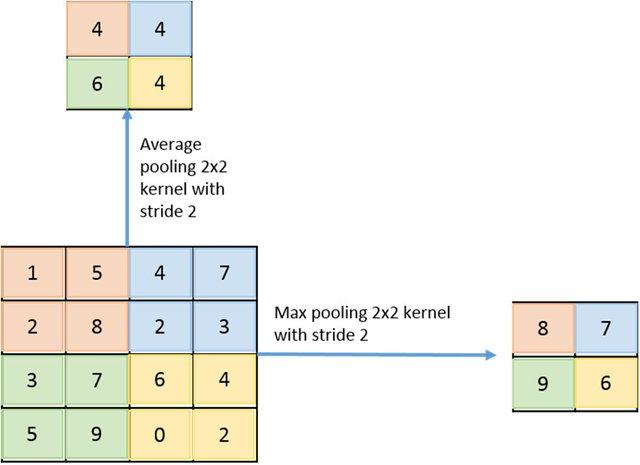
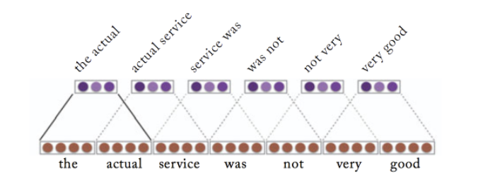
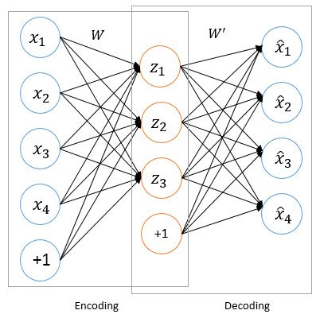
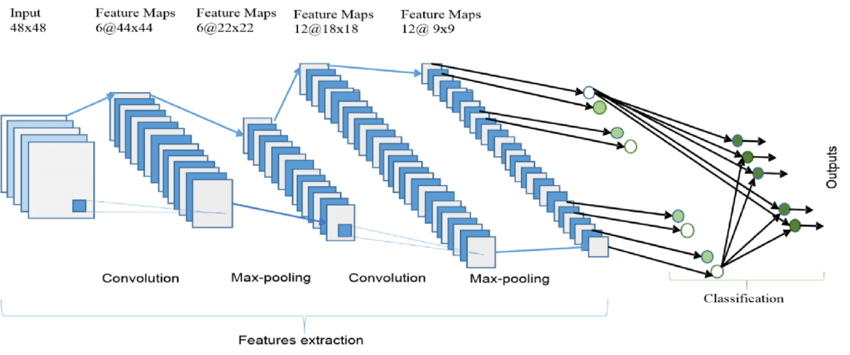

Take the text classification example and use it.
The input may be split into areas as in an image - but this is a text example. So think of Paris of words, word triplets etc.
This is referedd to as “pooling” - with an image you may have averages - with text it is just proximate grouping.

Text looks like this



1: # ----------------------------------------------------------------------------
2: # Setup
3: # ----------------------------------------------------------------------------
4: import matplotlib.pyplot as plt
5: import os
6: import re
7: import shutil
8: import string
9: import tensorflow as tf
10:
11: from tensorflow.keras import layers
12: from tensorflow.keras import losses
13:
14: print(tf.__version__)
15:
16:
17: # ----------------------------------------------------------------------------
18: # Get data.
19: # ----------------------------------------------------------------------------
20:
21: # Location to pull data from
22:
23: url = "https://ai.stanford.edu/~amaas/data/sentiment/aclImdb_v1.tar.gz"
24:
25: dataset = tf.keras.utils.get_file("aclImdb_v1",
26: url,
27: untar=True, cache_dir='.',
28: cache_subdir='')
29:
30: dataset_dir = os.path.join(os.path.dirname(dataset), 'aclImdb')
31: print ( os.listdir(dataset_dir) )
32:
33:
34:
35: train_dir = os.path.join(dataset_dir, 'train')
36: print ( os.listdir(train_dir) )
37:
38:
39: sample_file = os.path.join(train_dir, 'pos/1181_9.txt')
40: with open(sample_file) as f:
41: print(f.read())
42:
43:
44: # Discard data we are not using.
45: remove_dir = os.path.join(train_dir, 'unsup')
46: shutil.rmtree(remove_dir)
47:
48:
49: # ----------------------------------------------------------------------------
50: # xyzzy
51: # ----------------------------------------------------------------------------
52:
53: batch_size = 32
54: seed = 42
55:
56: raw_train_ds = tf.keras.utils.text_dataset_from_directory(
57: 'aclImdb/train',
58: batch_size=batch_size,
59: validation_split=0.2,
60: subset='training',
61: seed=seed)
62:
63: for text_batch, label_batch in raw_train_ds.take(1):
64: for i in range(3):
65: print("Review", text_batch.numpy()[i])
66: print("Label", label_batch.numpy()[i])
67:
68: print("Label 0 corresponds to", raw_train_ds.class_names[0])
69: print("Label 1 corresponds to", raw_train_ds.class_names[1])
70:
71:
72:
73: # ----------------------------------------------------------------------------
74: # xyzzy
75: # ----------------------------------------------------------------------------
76:
77: raw_val_ds = tf.keras.utils.text_dataset_from_directory(
78: 'aclImdb/train',
79: batch_size=batch_size,
80: validation_split=0.2,
81: subset='validation',
82: seed=seed)
83:
84: raw_test_ds = tf.keras.utils.text_dataset_from_directory(
85: 'aclImdb/test',
86: batch_size=batch_size)
87:
88:
89: def custom_standardization(input_data):
90: lowercase = tf.strings.lower(input_data)
91: stripped_html = tf.strings.regex_replace(lowercase, '<br />', ' ')
92: return tf.strings.regex_replace(stripped_html, '[%s]' % re.escape(string.punctuation), '')
93:
94:
95: # ----------------------------------------------------------------------------
96: # pooling of data
97: # ----------------------------------------------------------------------------
98:
99: max_features = 10000
100: sequence_length = 250
101:
102: vectorize_layer = layers.TextVectorization(
103: standardize=custom_standardization,
104: max_tokens=max_features,
105: output_mode='int',
106: output_sequence_length=sequence_length)
107:
108: # Make a text-only dataset (without labels), then call adapt
109: train_text = raw_train_ds.map(lambda x, y: x)
110: vectorize_layer.adapt(train_text)
111:
112:
113:
114: def vectorize_text(text, label):
115: text = tf.expand_dims(text, -1)
116: return vectorize_layer(text), label
117:
118:
119: # retrieve a batch (of 32 reviews and labels) from the dataset
120: text_batch, label_batch = next(iter(raw_train_ds))
121: first_review, first_label = text_batch[0], label_batch[0]
122: print("Review", first_review)
123: print("Label", raw_train_ds.class_names[first_label])
124: print("Vectorized review", vectorize_text(first_review, first_label))
125:
126:
127: print("1287 ---> ",vectorize_layer.get_vocabulary()[1287])
128: print(" 313 ---> ",vectorize_layer.get_vocabulary()[313])
129: print('Vocabulary size: {}'.format(len(vectorize_layer.get_vocabulary())))
130:
131:
132:
133: # ----------------------------------------------------------------------------
134: # Setup Training / Testing Data
135: # ----------------------------------------------------------------------------
136:
137:
138: train_ds = raw_train_ds.map(vectorize_text)
139: val_ds = raw_val_ds.map(vectorize_text)
140: test_ds = raw_test_ds.map(vectorize_text)
141:
142:
143:
144: AUTOTUNE = tf.data.AUTOTUNE
145:
146: train_ds = train_ds.cache().prefetch(buffer_size=AUTOTUNE)
147: val_ds = val_ds.cache().prefetch(buffer_size=AUTOTUNE)
148: test_ds = test_ds.cache().prefetch(buffer_size=AUTOTUNE)
149:
150:
151: embedding_dim = 16
152:
153:
154: # ----------------------------------------------------------------------------
155: # Multi Layer Model
156: # ----------------------------------------------------------------------------
157:
158: model = tf.keras.Sequential([
159: layers.Embedding(max_features + 1, embedding_dim),
160: layers.Dropout(0.2),
161: layers.GlobalAveragePooling1D(),
162: layers.Dropout(0.2),
163: layers.Dense(1)])
164:
165: model.summary()
166:
167:
168: model.compile(loss=losses.BinaryCrossentropy(from_logits=True),
169: optimizer='adam',
170: metrics=tf.metrics.BinaryAccuracy(threshold=0.0))
171:
172:
173:
174:
175: # ----------------------------------------------------------------------------
176: # Train Model
177: # ----------------------------------------------------------------------------
178:
179: epochs = 10
180: history = model.fit(
181: train_ds,
182: validation_data=val_ds,
183: epochs=epochs)
184:
185:
186:
187: # ----------------------------------------------------------------------------
188: # Evaluate Model
189: # ----------------------------------------------------------------------------
190:
191: loss, accuracy = model.evaluate(test_ds)
192:
193: print("Loss: ", loss)
194: print("Accuracy: ", accuracy)
195:
196:
197: history_dict = history.history
198: history_dict.keys()
199:
200:
201:
202: # Review results of Training
203:
204:
205: acc = history_dict['binary_accuracy']
206: val_acc = history_dict['val_binary_accuracy']
207: loss = history_dict['loss']
208: val_loss = history_dict['val_loss']
209:
210: epochs = range(1, len(acc) + 1)
211:
212: # "bo" is for "blue dot"
213: plt.plot(epochs, loss, 'bo', label='Training loss')
214: # b is for "solid blue line"
215: plt.plot(epochs, val_loss, 'b', label='Validation loss')
216: plt.title('Training and validation loss')
217: plt.xlabel('Epochs')
218: plt.ylabel('Loss')
219: plt.legend()
220:
221: plt.show()
222:
223:
224:
225:
226:
227: plt.plot(epochs, acc, 'bo', label='Training acc')
228: plt.plot(epochs, val_acc, 'b', label='Validation acc')
229: plt.title('Training and validation accuracy')
230: plt.xlabel('Epochs')
231: plt.ylabel('Accuracy')
232: plt.legend(loc='lower right')
233:
234: plt.show()
235:
236:
237: # ----------------------------------------------------------------------------
238: # Export Model so we can use it.
239: # ----------------------------------------------------------------------------
240:
241: export_model = tf.keras.Sequential([
242: vectorize_layer,
243: model,
244: layers.Activation('sigmoid')
245: ])
246:
247: export_model.compile(
248: loss=losses.BinaryCrossentropy(from_logits=False), optimizer="adam", metrics=['accuracy']
249: )
250:
251: # Test it with `raw_test_ds`, which yields raw strings
252: loss, accuracy = export_model.evaluate(raw_test_ds)
253: print(accuracy)
254:
255:
256:
257:
258: # ----------------------------------------------------------------------------
259: # Test with new data.
260: # ----------------------------------------------------------------------------
261:
262: examples = [
263: "The movie was great!",
264: "The movie was okay.",
265: "The movie was terrible...",
266: "The best time ever",
267: "Horrid waste of time"
268: ]
269:
270: print ( export_model.predict(examples) )